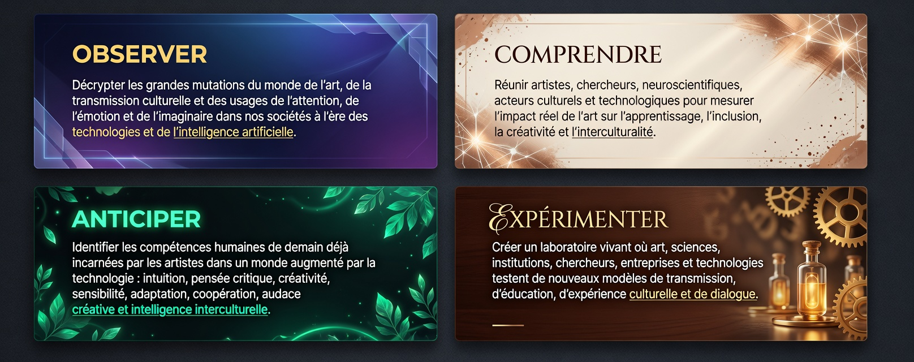

Institut
XXVII Future of Art Institute
Le premier observatoire international dédié à la transmission culturelle par l'art. Le XXVII Future of Art Institute est le think tank de la Fondation XXVII.
Nos missions

Le premier observatoire international dédié à la transmission culturelle par l'art. Le XXVII Future of Art Institute est le think tank de la Fondation XXVII.
